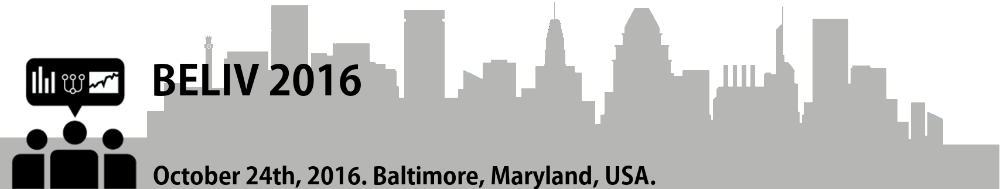
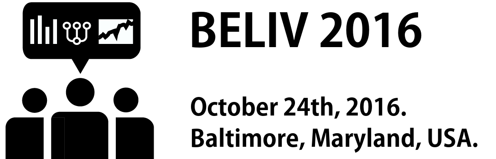

Panelists announced
We are happy to announce that
Daniel Weisskopf, Laura McNamara, Mark Whiting, Niklas Elmqvist, and Tamara Munzner
have agreed to participate in our panel "On the Future of Evaluation and BELIV". We are looking forward to some fantastic discussions
with this very strong and diverse set of panelists. The panel will be in the last session from 4:15pm - 5:30pm. Don't miss it!
BELIV 2016 Impact award
We took BELIV's 10 year anniversary as an opportunity to investigate how
our papers have been received and decided to give out an impact
award for the most influential paper. We are happy to announce that
the most viewed, cited, and downloaded BELIV paper is "Strategies for Evaluating Information Visualization Tools:
Multi-dimensional In-depth Long-term Case Studies" by Ben Shneiderman and Catherine Plaisant.
Congratulations Ben and Catherine!
Program and Keynote
This year we were able to accept 19 fantastic papers (out of 28 submissions). We also will have a great
keynote
by Enrico Bertini, and a panel on the future of evaluation and BELIV. Check out the
program
for more details.
Paper submission deadline revised
Due to multiple requests, we decided to move the paper submission deadline by a couple of days. The new paper deadline is
Sunday, June 19, 23:59 PDT.
CfP online
The Call for Papers
is now online! For the first time, we offer three different paper categories—research,
position, and survey papers.
Date of the workshop
VIS announced the dates for pre-approved workshops and symposia: BELIV will be held on Monday, Oct 24th, 2016!
Dates
Important dates are online now, CfP will follow soon.
BELIV 2016 announced
The BELIV workshop series is a biennial event focusing on the challenges of evaluation in visualization.
BELIV 2016 will be the sixth of the BELIV workshop series and will be held October 24th, 2016,
as a one-day workshop at IEEE VIS 2016 in Baltimore. All registered attendees of VIS will be able to attend the workshop.